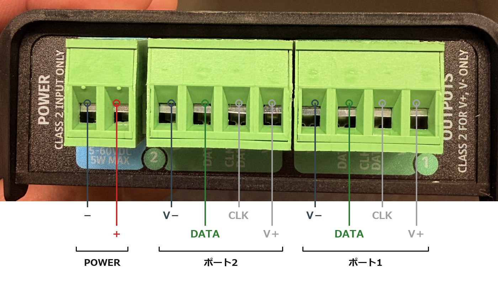
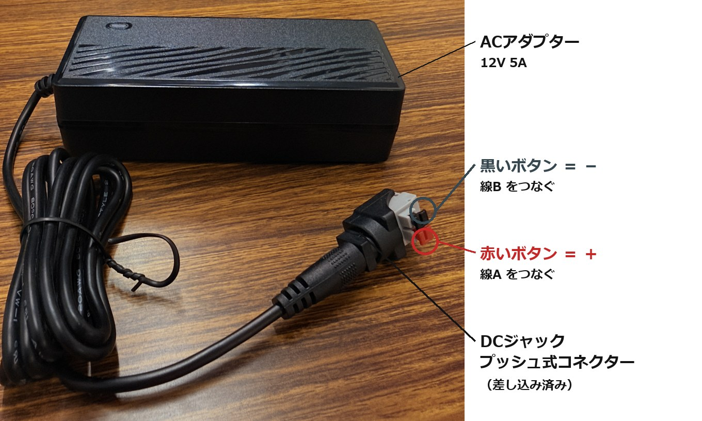

LEDテープを 5本 つないで 光らせよう
LEDテープ 5本（1本 5m）を、コントローラー「OCTO（オクト）」につないで、パソコンから 光らせる 組立説明書です。
ステップの じゅんばんどおりに すすめて、おわったら「□ できた」に ✓ を つけましょう。
やくそく
- コンセントに さすのは さいごです。ステップ14 まで、ぜったいに さしません。
- 赤（＋）と 黒・白（－）を まちがえない。まちがえると、こわれることが あります。
- はさみ・ニッパー・ワイヤーストリッパーを つかうときは、おとなの人と いっしょに やります。
- へんな におい、あつい、けむりが でたら、すぐに おとなの人に しらせて、コンセントを ぬきます。
1. どんな ものを つくるの？
ぜんたいの 図。テープ1つに アダプターが1つ。OCTO は テープ1・テープ4 に しんごうを おくります。
- アダプターは、コンセントの でんきを テープ用の でんき（12V）に かえる はこです。テープ1本に 1個 つかいます。
- OCTO（オクト）は、「どの LED を なにいろに 光らせるか」という しんごうを テープに おくる きかいです。
- テープは でんきだけでは 光りません。でんき と しんごう の りょうほうが ひつようです。
2. つかう もの
| もの | かず | どこで つかう？ |
|---|
| LEDテープ（5m） | 5 | 光らせる テープ |
| ACアダプター 12V 5A | 5 | テープの でんき（ステップ4） |
| DCジャック プッシュ式コネクター（赤と黒の ボタン つき） | 5 | アダプターに つける（ステップ4） |
| ENTTEC OCTO MK3 | 1 | しんごうを おくる きかい |
| スピーカーケーブル（どうせん） | 1まき | でんきの 線を つくる（ステップ3） |
| ワンタッチコネクター 3本用（JAPPY） | 11 | ＋の まとめ 5・ジャンパー 6 |
| ワンタッチコネクター 5本用（WAGO） | 5 | －の まとめ |
| 3ピン コネクター（オス・メス セット） | 3セット | ジャンパー（ステップ9） |
| ギフト3ピンコネクター（テープの はこに 入っている） | 2 | OCTO と テープ（ステップ8） |
| でんげんタップ（6こ口） | 1 | アダプター5個を さす |
| LANケーブル | 1 | OCTO と パソコン（おとなの人が つかう） |
どうぐ：ワイヤーストリッパー（または ニッパー）、ほそい マイナスドライバー、ビニールテープ、マスキングテープ、ペン、ものさし
3. ぶひんを よく 見よう
LEDテープの 2つの はし

入力側（しんごうが 入る はし）

出力側（しんごうが 出る はし）
- テープには やじるし（→）が かいてあります。やじるしが はじまる ほうが「入力側」、やじるしが むかう ほうが「出力側」です。
- 入力側には メスの コネクター（あなが あいている）、出力側には オスの コネクター（でっぱりが ある）が ついています。
- どちらの はしにも、コネクターとは べつに 赤と白の 線が 出ています。赤＝＋、白＝－です。
OCTO の あな（たんし）

OCTO の みどりの ブロック。なまえが 見えにくいので、しゃしんに かきこみました。
- POWER（いちばん左の 2つの あな）：OCTO の でんき。左が －、右が ＋。
- ポート1（右の 4つの あな）と ポート2（まんなかの 4つの あな）：テープに しんごうを おくる ところ。どちらも 左から V－・DATA・CLK・V＋ です。
- つかうのは V－（左はし）と DATA（左から2つめ）だけ。CLK と V＋ には なにも さしません。
- あなの 上に ある ねじを ドライバーで ゆるめて、線を 入れて、ねじを しめて とめます。
アダプター と ワンタッチコネクター

アダプターの さきに、DCジャック プッシュ式コネクターを さした ところ
ワンタッチコネクターの つかいかた
- あおい レバーを 上げる。
- 線の はだかの ところを、おくまで さす。
- レバーを 下げる。
- かるく ひっぱって、ぬけなければ OK。
おなじ コネクターに さした 線どうしは、ぜんぶ つながります。
4. くみたて
ステップ1テープに 1〜5 の ばんごうを つける
- マスキングテープを 10枚 きって、「1」〜「5」を 2枚ずつ かきます。
- テープの まき（リール）と、入力側の はしに、おなじ ばんごうを はります。
- アダプターにも「1」〜「5」を はります。テープと アダプターは おなじ ばんごうどうしで つかいます。
テープ（リール）と アダプターに 1〜5 の ばんごう
□ できた
ステップ2ならべる
- 図のように、テープ1→2→3 を ひとつめの れつ、テープ4→5 を ふたつめの れつに ならべます。
- やじるしが、テープ1 から テープ3 の ほうへ、テープ4 から テープ5 の ほうへ むくように おきます。
- OCTO は、テープ1 と テープ4 の 入力側の ちかく（3m いない）に おきます。
ならべかた。うえの れつ：テープ1→2→3、したの れつ：テープ4→5
□ できた
ステップ3でんきの 線を 12本 つくる
スピーカーケーブルは、どうせんが 2本 くっついた ケーブルです。かたほうに しるし（すじや もじ）が あります。
- スピーカーケーブルを 15cm に 6本 きります。
- 1本ずつ まんなかで さいて、2本に わけます。ぜんぶで 12本に なります。
- しるしの ある 線は ＋に つかいます。マスキングテープで「A1」〜「A5」と「C」を はります（6本）。
- しるしの ない 線は －に つかいます。「B1」〜「B5」と「D」を はります（6本）。
- 12本 ぜんぶ、りょうはしの かわを 1cm むきます。
ワイヤーストリッパーで かわを むくときは、おとなの人と いっしょに やりましょう。中の どうせんを きらないように ちゅういします。
| 線 | つなぐ ところ |
|---|
| A1〜A5 | アダプターの 赤い ボタン（＋） → テープの 赤い 線 |
| B1〜B5 | アダプターの 黒い ボタン（－） → テープの 白い 線 |
| C | テープ1 の ＋ → OCTO の POWER ＋ |
| D | テープ1 の － → OCTO の POWER － |
でんきの 線（せん）の つくりかた。ぜんぶで 12本
□ できた
ステップ4アダプターに 線を つける（5個とも）
アダプター1 から じゅんばんに、5個 ぜんぶ おなじように やります。
- アダプターの まるい さきっぽに、DCジャック プッシュ式コネクターを おくまで さします（下の しゃしん）。
- 赤い ボタンを ゆびで おしたまま、ボタンの すぐ下の あなに A（アダプター1 なら A1）を さして、ゆびを はなします。
- 黒い ボタンを おしたまま、B（アダプター1 なら B1）を さして、ゆびを はなします。
- かるく ひっぱって、ぬけないか たしかめます。
ちゅうい：赤＝＋、黒＝－。ぎゃくに すると、こわれることが あります。
□ 1 □ 2 □ 3 □ 4 □ 5 できた
ステップ5テープ2〜5 に でんきを つなぐ
テープ2・3・4・5 の 入力側で、おなじように やります。
- 3本用の ワンタッチコネクターに、A の のこりの はしと、テープの 赤い 線を さします。
- 5本用の ワンタッチコネクターに、B の のこりの はしと、テープの 白い 線を さします。
テープ2 には A2・B2、テープ3 には A3・B3 … と、ばんごうを あわせます。
テープ2〜5：A は 赤い線と、B は 白い線と、ワンタッチコネクターで つなぐ
□ 2 □ 3 □ 4 □ 5 できた
ステップ6テープ1 と OCTO に でんきを つなぐ
テープ1 は、OCTO にも でんきを わけるので、線が 1本ずつ おおく なります。
- 3本用に、A1 の のこりの はし・テープ1 の 赤い 線・C を さします。
- 5本用に、B1 の のこりの はし・テープ1 の 白い 線・D を さします。
- C の もう かたほうを OCTO の POWER の 右（＋）に、D を POWER の 左（－）に さして、ねじを しめます。
OCTO は つかう でんきが すくないので、アダプター1 から わけても だいじょうぶです。
テープ1：C と D も いっしょに さして、OCTO の POWER に つなぐ（右が ＋、左が －）
□ できた
ステップ7ギフトコネクターを OCTO に つなぐ（2個）
テープの はこに 入っていた ギフト3ピンコネクター（線の さきが はだかの もの）を 2個 つかいます。
- 1個めの みどりの 線を ポート1 の 左から2つめ（DATA）、白い 線を ポート1 の 左はし（V－）に さして、ねじを しめます。
- 2個めの みどりを ポート2 の DATA、白を ポート2 の V－に さして、ねじを しめます。
- どちらも 赤い 線は つかいません。さきを ビニールテープで ぐるぐる まきます。
みどり → DATA、白 → V－。赤は つかわないので、さきを まく。ポート1 と ポート2 の 2か所 おなじように
□ ポート1 □ ポート2 できた
ステップ8OCTO と テープ1・テープ4 を つなぐ
- ポート1 の ギフトコネクターを、テープ1 の 入力側の メスコネクターに さします。
- ポート2 の ギフトコネクターを、テープ4 の 入力側の メスコネクターに さします。
さす まえに、みどりの 線どうしが つながる むきか、見て たしかめましょう。
ポート1 → テープ1、ポート2 → テープ4
□ テープ1 □ テープ4 できた
ステップ9ジャンパーを 3本 つくる
ジャンパーは、まえの テープから つぎの テープへ、しんごう（みどり）と －（白）だけを わたす みじかい 線です。3ピン コネクターの オス・メス セットで つくります。
- メスの コネクターと オスの コネクターを 1個ずつ よういします。
- 3本用の ワンタッチコネクター 1個に、みどりと みどりを さします。
- べつの 3本用 1個に、白と 白を さします。
- 赤と 赤は つなぎません。どちらの 赤も、さきを ビニールテープで まきます。
- おなじものを、ぜんぶで 3本 つくります。
ちゅうい：テープどうしの コネクターを じかに さしては いけません。かたちは あいますが、赤い 線で アダプターどうしが つながって しまいます。かならず ジャンパーを あいだに 入れます。
ジャンパー 1本の つくりかた。これを 3本 つくる
□ 1本め □ 2本め □ 3本め できた
ステップ10テープどうしを ジャンパーで つなぐ
- テープ1 の 出力側の オスに ジャンパーの メスを さし、ジャンパーの オスを テープ2 の 入力側の メスに さします。
- おなじように、テープ2 → テープ3 を つなぎます。
- おなじように、テープ4 → テープ5 を つなぎます。
テープ3 と テープ4 は つなぎません（テープ4 は OCTO の ポート2 から しんごうを もらいます）。
テープと テープの あいだに、かならず ジャンパーを 入れる
□ 1→2 □ 2→3 □ 4→5 できた
ステップ11出力側の 赤と白の 線を まく
テープの 出力側にも、赤と白の 線が 出ています（下の しゃしん）。ここにも でんきが きているので、さきが ほかの ものに さわらないように します。
- テープ1〜5 の 出力側の 赤と 白の さきを、1本ずつ ビニールテープで まきます。
- 赤と 白を くっつけて まいては いけません。べつべつに まきます。
出力側の 赤と白の 線（せん）。さきを 1本ずつ ビニールテープで まく
□ 1 □ 2 □ 3 □ 4 □ 5 できた
5. さいごの チェック
ステップ12ぜんぶ たしかめる
- アダプター5個とも、赤い ボタンに A、黒い ボタンに B が 入っている
- 3本用（＋）には 赤い 線と A だけ、5本用（－）には 白い 線と B だけが 入っている
- OCTO の POWER の 右に C（＋）、左に D（－）が 入っている
- OCTO の ポート1・ポート2 に、みどり（DATA）と 白（V－）が 入っている
- ワンタッチコネクターの レバーが ぜんぶ 下がっていて、ひっぱっても ぬけない
- つかわない 赤い 線（ギフトコネクター・ジャンパー）と、出力側の 赤・白の 線の さきが、ぜんぶ まいてある
- テープどうしは、かならず ジャンパーで つながっている（じかに さしていない）
- はだかの どうせんどうしが さわっていない
□ ぜんぶ OK
ステップ13おとなの人に 見てもらう
ステップ12 の チェックを、おとなの人にも もういちど 見てもらいます。
□ 見てもらった
ステップ14でんきを 入れる
ここからは おとなの人と いっしょに やります。
- でんげんタップの スイッチを きって（OFF に して）おきます。
- アダプター5個の コンセントを、でんげんタップに さします。
- でんげんタップを かべの コンセントに さして、スイッチを 入れます（ON）。
- OCTO の ランプが つけば OK です。テープは まだ 光りません（しんごうが まだ ないから）。
へんな におい・あつい・けむりが あったら、すぐに でんげんタップの スイッチを きります。
さいごに でんげんタップの スイッチを 入れる
□ できた
6. パソコンの せってい（おとなの人が やります）
ここからは、OCTO と TouchDesigner の せっていです。おとなの人が やります。
6-1. PC と OCTO をつなぐ
- LANケーブルで、PC と OCTO の ETHERNET IN を直接つなぎます。
- PC の有線 LAN の IP アドレスを手動で設定します：IP 192.168.0.20／サブネットマスク 255.255.255.0
Windows：設定 → ネットワークとインターネット → イーサネット → IP 割り当ての「編集」→「手動」→ IPv4 をオン
- ブラウザ（Chrome 推奨）で 192.168.0.10 を開きます。「保護されていない通信」と出ますが、そのまま進みます。開けないときは ENTTEC の無料ソフト EMU で OCTO を探します。

ETHERNET IN に LAN ケーブルを差します。RESET / IDENTIFY ボタンは使いません（押したまま電源を入れると、ネットワーク設定が初期化されます）。
6-2. OCTO の設定
| 場所 | 項目 | ポート1 | ポート2 |
|---|
| Settings → Pixel Mapping Options | Input Protocol | Art-Net（初期値のまま） |
| Settings → Output Settings | LED Protocol | WS2811 | WS2811 |
| Settings → Output Settings | Mapped Pixels | 300（テープ1〜3） | 200（テープ4〜5） |
| Settings → Output Settings | 開始ユニバース | 0 | 2 |
最後に Save を押します。1ユニバースに入るのは RGB で170ピクセルまでなので、ポート1 はユニバース 0・1、ポート2 は 2・3 を使います（OCTO が続きを自動で使います）。初期設定は WS2812B なので、必ず WS2811 に変えてください。
6-3. TouchDesigner から点灯
500ピクセル × RGB = 1,500 サンプル を作り、4つのユニバースに分けて送ります。
| オペレーター | パラメーター | 設定値 |
|---|
| Pattern CHOP | Length | 1500 |
| Math CHOP | Range タブ | From Range -1〜1 → To Range 0〜255 |
| Trim CHOP × 4 | 範囲（単位はサンプル） | 0〜509／510〜899／900〜1409／1410〜1499 |
| DMX Out CHOP × 4 | Interface | Art-Net |
| Network Address | 192.168.0.10 |
| Net／Subnet | 0／0 |
| Universe | 上の Trim の順に 0／1／2／3 |
| Format／Rate | Packet Per Channel／44 以下 |
- テープに色の波が出れば成功です。サンプル 0・1・2 が1つ目のピクセルの R・G・B です。
- 色の順番が違うときは、OCTO の設定で色の並び（RGB／GRB など）を変えます。
- 白の最大輝度（すべて 255）は、5m あたりアダプターの容量（60W）を超えるおそれがあります。長時間つけるときは明るさを抑えます。
7. こまったときは
| こんなとき | こうする |
|---|
| OCTO の ランプが つかない | ステップ6（C と D）と、アダプター1 の ボタンの 線を たしかめる。 |
| OCTO は つくけど、テープが ぜんぶ 光らない | おとなの人に、6章の せってい（WS2811・Save）を たしかめて もらう。 |
| テープ1〜3（または 4〜5）だけ 光らない | ステップ7・8 の ポート1（または ポート2）の みどりと 白を たしかめる。 |
| テープの とちゅうから さき が 光らない | 光らなく なった テープの まえの ジャンパー（ステップ10）を たしかめる。みどりと 白が つながっているか 見る。 |
| 1本だけ ぜんぶ 光らない・くらい | その テープの アダプター（ステップ4・5）を たしかめる。 |
| いろが ちがう | こわれて いません。おとなの人に、OCTO の いろの じゅんばんを かえて もらう。 |
| あつい・へんな におい | すぐに でんげんタップの スイッチを きって、おとなの人に しらせる。 |